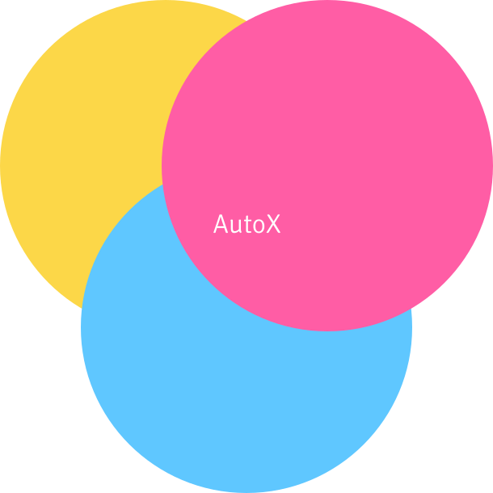

AutoX to narzędzie adresowane dla biur rachunkowych, które chcą przyśpieszyć i zautomatyzować
księgowanie faktur swoich klientów. AutoX to połączenie wiedzy, bazy danych oraz możliwości
jakie daje machine learning.

AutoX is a revolutionary product which can
book your documents
automatically. The system learns how to categorize
information based on the input data in order to automatically
book it in the future.
Machine Learning
Algorithm-recognized data patterns.
Knowledge
Set of accounting rules
Data Source
Information regarding
booking previous expenses
To achieve the best results with automated booking, the system must acquire knowledge on how to classify all obtained documents.
TeacherX is a place where people cooperate with machines.
People can teach the system, how to book documents in the right way. Our software still needs to learn to achieve best results. That is why we need real accountants to teach our system how to classify all gathered documents.
The system learns and remembers accountant’s decisions on proper booking of documents. With the next part of documents for booking, our system applies its accumulated data and books those documents automatically.
Automate the manual processes repeated daily.
Fajnie byłoby dopisać tutaj jeszcze dwie lub trzy linijki tekstu, aby ładnie zamknąć kolumnę tekstu, aby była równa z kolumną po lewej.
System został wdrożony w Ogólnopolskim Biurze Rachunkowym.
Zobacz jak prezentują się na żywo statystyki efektywności
systemu AutoX.
The Benefits of AutoX
Save 40-60% over
competing solution
Savings and scalability with automation instead of manual data entry.
Reabilyty and
Consistency
24/7 bookkeeping, bank grade security, and dedicated accountant ensure your books are always handled and always accurate.
Seamless integration
and improvement
Be up and running with botkeeper in less than an hour, and watch as botkeeper quickly learns the subtle, custom nuances of your business and continuously improves efficiency over time.
Beautifull
Dashboards
Quickly see how your business is doing, analyze trends, and understand what is working with your company or organization
Related Content
Implementation of AutoX.
Case Study by inFakt.pl
Medium
→
AutoX - Helpdesk and FAQ
Zendesk
→